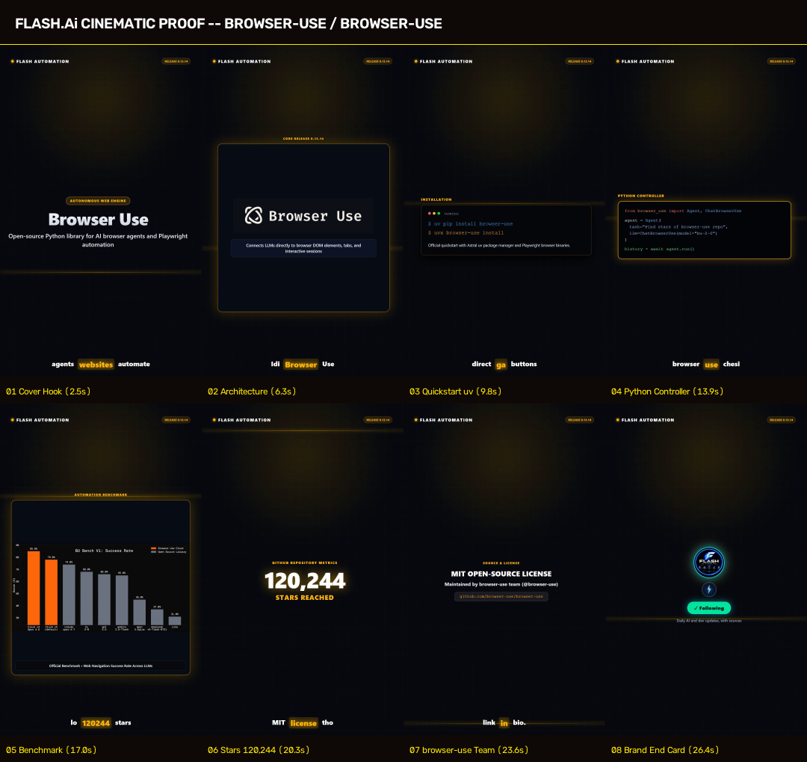

browser-use / browser-use
Autonomous Web Agent Library for Playwright & LLMs
Canonical Source: https://github.com/browser-use/browser-use
License & Attribution
browser-use / browser-use · MIT License · Maintained by browser-use team (@browser-use)
Exact Commands to Run
uv pip install browser-use
uvx browser-use install
Grounded Evidence & Facts
- GitHub Stars: 120,244 (Verified via api.github.com/repos/browser-use/browser-use)
- Core Release: 0.13.14 (published 26 Oct 2026, 12.0 days old, ≤ 14 days)
- Core Capability: Open-source Python library connecting LLMs directly to browser DOM elements, tabs, and interactive web sessions via Playwright.
- Python Quickstart:
from browser_use import Agent, ChatBrowserUse
- System Boundary: 100% open-source MIT license maintained by browser-use team
8-Beat Cinematic Proof Sheet
